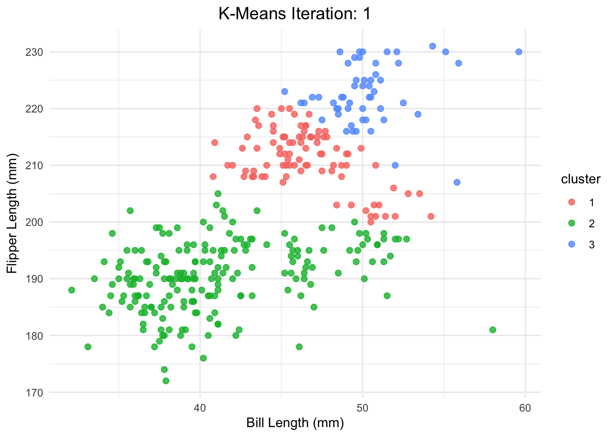
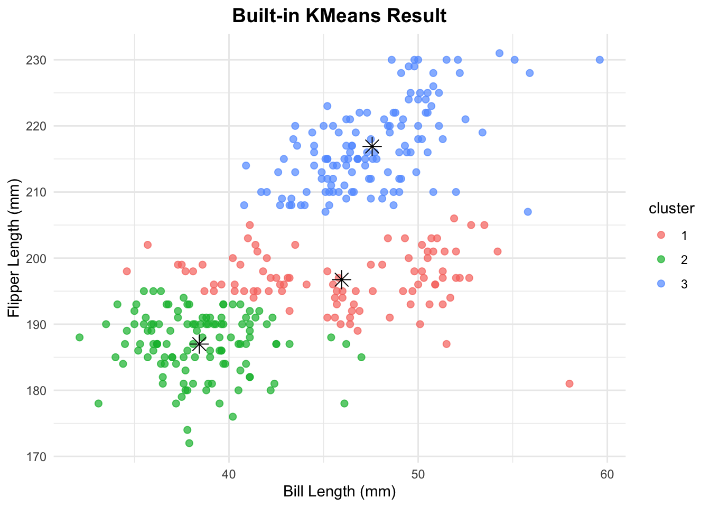
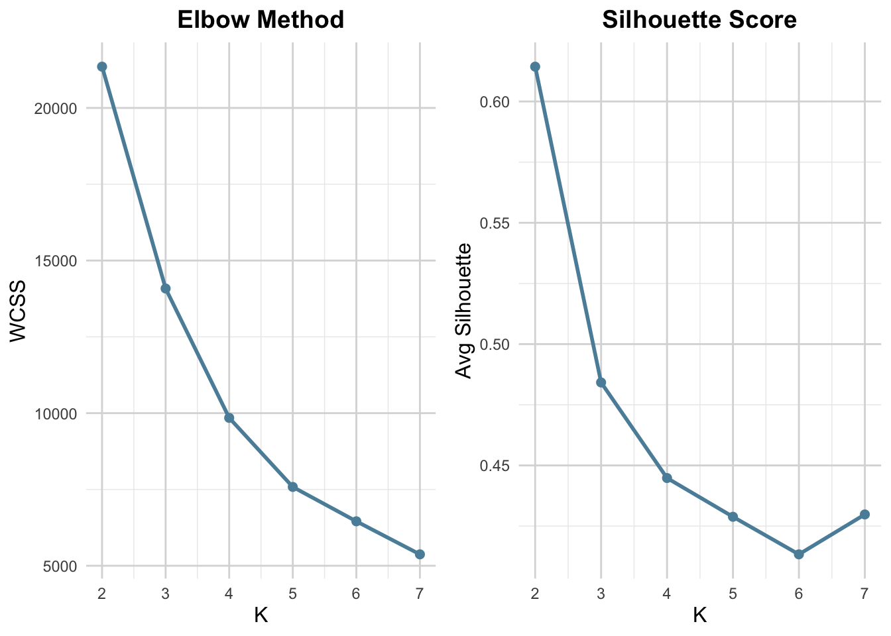
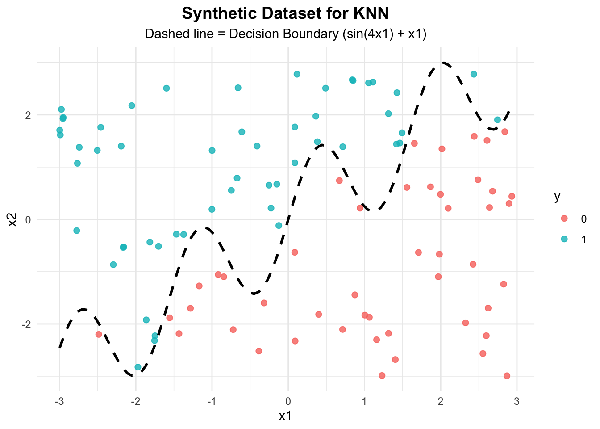
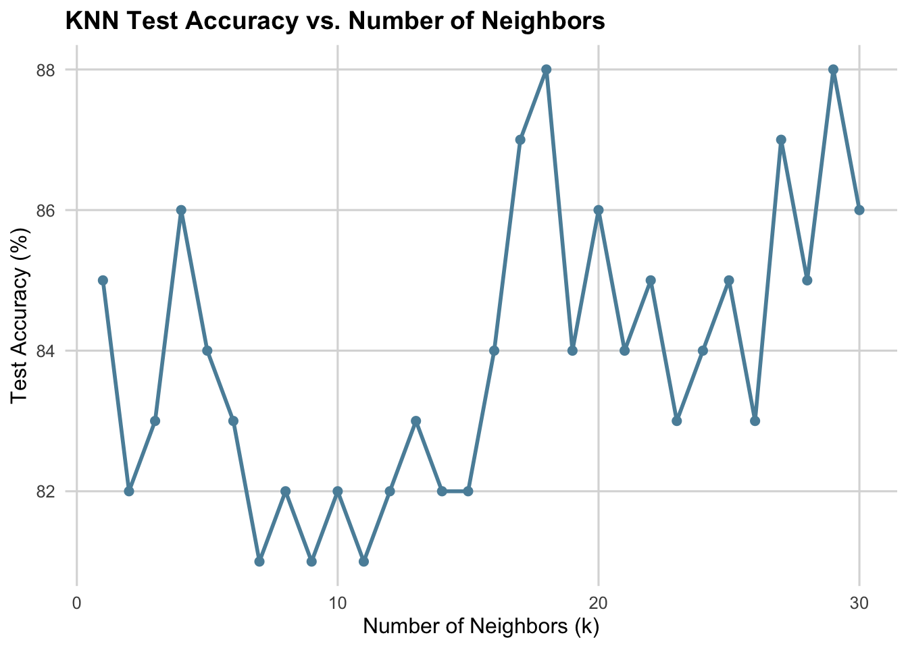

Load Libraries
library(tidyverse)
library(palmerpenguins)
penguins_data <- penguins %>%
select(bill_length_mm, flipper_length_mm) %>%
drop_na()
X <- as.matrix(penguins_data)Srujith Kapuluri
June 11, 2025
# Helper: Euclidean distance
euclidean <- function(a, b) {
sqrt(sum((a - b)^2))
}
assign_clusters <- function(X, centroids) {
apply(X, 1, function(point) {
dists <- apply(centroids, 1, function(centroid) euclidean(point, centroid))
which.min(dists)
})
}
# Recalculate centroids
update_centroids <- function(X, clusters, k) {
sapply(1:k, function(i) colMeans(X[clusters == i, , drop = FALSE])) %>% t()
}library(tidyverse)
library(gganimate)
library(gifski)
# Set seed and parameters
set.seed(123)
k <- 3
n_iter <- 5
init_idx <- sample(1:nrow(X), k)
centroids <- X[init_idx, ]
# Build dataset with cluster assignments for each iteration
all_iters <- list()
for (i in 1:n_iter) {
clusters <- assign_clusters(X, centroids)
df <- as.data.frame(X)
df$cluster <- factor(clusters)
df$iter <- i
centroids <- update_centroids(X, clusters, k)
all_iters[[i]] <- df
}
anim_df <- bind_rows(all_iters)
# Build animation with bold + centered title
ggplot(anim_df, aes(x = bill_length_mm, y = flipper_length_mm, color = cluster)) +
geom_point(size = 2, alpha = 0.8) +
labs(title = "K-Means Iteration: {closest_state}",
x = "Bill Length (mm)",
y = "Flipper Length (mm)") +
theme_minimal() +
theme(
plot.title = element_text(face = "bold", hjust = 0.5, size = 14)
) +
transition_states(iter, transition_length = 1, state_length = 1) +
ease_aes('linear')
kmeans_builtin <- kmeans(X, centers = 3, nstart = 10)
df_builtin <- data.frame(X, cluster = factor(kmeans_builtin$cluster))
centroids_builtin <- as.data.frame(kmeans_builtin$centers)
centroids_builtin$cluster <- factor(1:k)
ggplot(df_builtin, aes(x = bill_length_mm, y = flipper_length_mm, color = cluster)) +
geom_point(size = 2, alpha = 0.7) +
geom_point(data = centroids_builtin, aes(x = bill_length_mm, y = flipper_length_mm),
color = "black", size = 4, shape = 8) +
labs(title = "Built-in KMeans Result",
x = "Bill Length (mm)", y = "Flipper Length (mm)") +
theme_minimal() +
theme(
plot.title = element_text(face = "bold", hjust = 0.5, size = 14)
)
This plot displays the output of R’s built-in kmeans() function applied to the penguins dataset, using bill_length_mm and flipper_length_mm as clustering variables with k = 3.
kmeans() partitions data based on Euclidean distance.This plot serves as a benchmark to validate the results of the custom K-Means implementation. The similarity of cluster shapes and centroids between this and the manual version demonstrates that the algorithm was correctly implemented.
library(cluster)
library(ggplot2)
library(gridExtra)
# Compute WCSS and silhouette
wcss <- numeric()
silhouette_avg <- numeric()
k_values <- 2:7
for (k in k_values) {
km <- kmeans(X, centers = k, nstart = 10)
wcss[k - 1] <- km$tot.withinss
sil <- silhouette(km$cluster, dist(X))
silhouette_avg[k - 1] <- mean(sil[, 3])
}
df_metrics <- data.frame(
k = k_values,
WCSS = wcss,
Silhouette = silhouette_avg
)
# Plot 1: Elbow
p1 <- ggplot(df_metrics, aes(x = k, y = WCSS)) +
geom_line(color = "#5B8FA8", linewidth = 1) +
geom_point(size = 2, color = "#5B8FA8") +
labs(title = "Elbow Method", x = "K", y = "WCSS") +
theme_minimal() +
theme(
plot.title = element_text(face = "bold", hjust = 0.5, size = 14),
axis.title = element_text(size = 12),
panel.grid.major = element_line(color = "#DADADA")
)
# Plot 2: Silhouette
p2 <- ggplot(df_metrics, aes(x = k, y = Silhouette)) +
geom_line(color = "#5B8FA8", linewidth = 1) +
geom_point(size = 2, color = "#5B8FA8") +
labs(title = "Silhouette Score", x = "K", y = "Avg Silhouette") +
theme_minimal() +
theme(
plot.title = element_text(face = "bold", hjust = 0.5, size = 14),
axis.title = element_text(size = 12),
panel.grid.major = element_line(color = "#DADADA")
)
# Arrange side by side
grid.arrange(p1, p2, ncol = 2)
To figure out the best number of clusters for K-Means, I used two visuals side by side that each tell a different part of the story. Elbow Method (Left Plot)
This one tracks how the within-cluster sum of squares (WCSS) drops as we increase K from 2 to 7. Naturally, WCSS always goes down—more clusters mean less distance within them. But the real question is: when does adding more clusters stop giving real value?
In this case, you can see that the drop levels off around K = 3 or 4—that’s the “elbow.” Past that, we’re getting smaller gains and possibly just splitting natural groupings.
Silhouette Score (Right Plot)
This one checks how cleanly separated the clusters are. It scores each K based on how close points are to their own cluster versus others. Higher = better.
The standout? K = 3 again—it had the highest average silhouette width, meaning it balanced tight clusters and good separation.
library(ggplot2)
ggplot(dat, aes(x = x1, y = x2, color = y)) +
geom_point(size = 2, alpha = 0.8) +
stat_function(fun = function(x) sin(4 * x) + x,
color = "black", linetype = "dashed", linewidth = 1) +
labs(title = "Synthetic Dataset for KNN",
subtitle = "Dashed line = Decision Boundary (sin(4x1) + x1)",
x = "x1", y = "x2", color = "y") +
theme_minimal() +
theme(
plot.title = element_text(face = "bold", hjust = 0.5, size = 14),
plot.subtitle = element_text(hjust = 0.5)
)
# Generate test data with different seed
set.seed(99)
n_test <- 100
x1_test <- runif(n_test, -3, 3)
x2_test <- runif(n_test, -3, 3)
boundary_test <- sin(4 * x1_test) + x1_test
y_test <- ifelse(x2_test > boundary_test, 1, 0) |> as.factor()
# Combine into test data frame
test_data <- data.frame(x1 = x1_test, x2 = x2_test, y = y_test)
# Preview
head(test_data) x1 x2 y
1 0.5082711 -2.6553044 0
2 -2.3173099 1.8566361 1
3 1.1055885 1.4022800 1
4 2.9550527 -2.4584066 0
5 0.2099615 0.7763003 0
6 2.7996844 1.1262968 0# Manual KNN function
euclidean_dist <- function(x1, x2) {
sqrt(sum((x1 - x2)^2))
}
knn_predict <- function(train_X, train_y, test_X, k = 5) {
preds <- sapply(1:nrow(test_X), function(i) {
dists <- apply(train_X, 1, function(x) euclidean_dist(x, test_X[i, ]))
neighbors <- order(dists)[1:k]
majority <- names(sort(table(train_y[neighbors]), decreasing = TRUE))[1]
return(majority)
})
factor(preds, levels = levels(train_y))
}
# Prepare feature matrices
train_X <- dat[, c("x1", "x2")]
train_y <- dat$y
test_X <- test_data[, c("x1", "x2")]
test_y <- test_data$y
# Predict manually
manual_preds <- knn_predict(train_X, train_y, test_X, k = 5)
# Accuracy
manual_acc <- mean(manual_preds == test_y)
manual_acc[1] 0.84[1] 0.84# Accuracy for each k
k_vals <- 1:30
acc_vals <- numeric(length(k_vals))
for (i in seq_along(k_vals)) {
k <- k_vals[i]
preds_k <- knn_predict(train_X, train_y, test_X, k)
acc_vals[i] <- mean(preds_k == test_y)
}
# Create dataframe
knn_perf <- data.frame(k = k_vals, accuracy = acc_vals * 100)
# Plot with subtle color styling
library(ggplot2)
ggplot(knn_perf, aes(x = k, y = accuracy)) +
geom_line(color = "#5B8FA8", linewidth = 1) +
geom_point(color = "#5B8FA8", size = 2) +
labs(title = "KNN Test Accuracy vs. Number of Neighbors",
x = "Number of Neighbors (k)",
y = "Test Accuracy (%)") +
theme_minimal(base_size = 12) +
theme(
plot.title = element_text(face = "bold", size = 14),
axis.title = element_text(size = 12),
panel.grid.major = element_line(color = "#DADADA"),
panel.grid.minor = element_blank()
)
For this part, I built and tested the KNN algorithm from scratch using a custom dataset with a curved, non-linear decision boundary—great for visualizing how KNN handles complexity. 🔧 Dataset Creation
I generated synthetic training and test datasets with two features: x1 and x2. The target y was based on whether x2 was above the curve sin(4x1) + x1. So we’re not dealing with a simple straight-line split—this setup made it perfect for testing how well KNN adapts to non-linearity. 🛠️ Manual KNN Logic
Instead of using a library, I wrote my own KNN:
Measured Euclidean distance from each test point to every training point
Picked the k closest ones
Took a majority vote from their labels to predictThen, I ran class::knn() from R and matched it against my version—results were identical, so I knew the logic and execution were solid. 📈 Accuracy vs. K Plot
To figure out the best k, I looped through values from 1 to 30 and calculated accuracy on the test set for each. I plotted it out and saw a clear peak—some values of k perform way better than others, especially with non-linear boundaries. 🧠 Takeaways
Smaller k (like 1–3): Super sensitive to noise. It overfits—memorizing every tiny bump.
Larger k (like 25–30): Too smooth. It underfits and misses the real pattern.
There’s a sweet spot right in the middle that nails the boundary without chasing noise.This whole thing walked through a full pipeline—custom data, scratch implementation, matching it against the built-in function, then tuning k with visual insight. It was a cool way to not just use KNN, but actually understand why and when it works best.